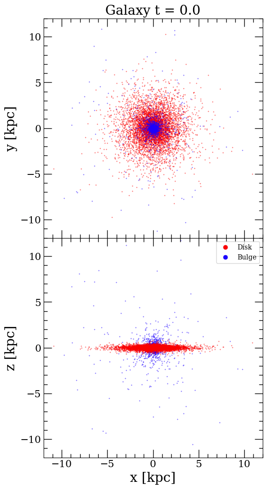
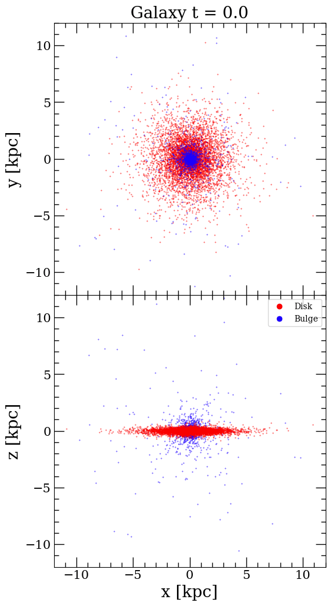

Simulation 1
 


Firstly, the galaxies are viewed from different angles as plotted in the upper and lower panels. However, when viewed along the sight, the galaxy appears as a streak of the thin disk with a central bulge. When viewed from above (vertically), it appears as a circular disk with the central bulge component. Additionally, the left panel is missing the dark matter halo particles, which are then plotted in the right panel as seen in Figure 1. The galaxy reflects the properties of the Milky Way galaxy and hence should appear spiral. Since there is no time evolution in the initial conditions file, the galaxy appears as a circular disk with a bulge at the centre. The Halo particles are dominant across the plot.
"vine_3D" from the Fortran directory. This modern code utilized a tree code (Binary tree) for simu-
lation. The ’insph’ file, containing various parameters for the simulation such as Plummer softening,
time step, and initialization settings, played a crucial role. Key parameters focused on for this simu-
lation were Plummer softening (’eps’), time step (’dtinit’), and the initial file (’base’). Simulation 1
involved dynamically evolving a disk galaxy using N-body simulations with specific parameters. The
Plummer softening was set to 0.1, the time step to 0.01, and the base to ’SPIRAL_000.’ Visualization
revealed the evolving galaxy structure, with slight visibility of spiral arms due to dark halos (figure
2). Quantitative analysis with "plot_vcirc.py" provided velocity profiles, cumulative mass, and surface
density profiles for Disk, Bulge, and Halo components. The surface density decreases with the radius,
and the cumulative mass for halo particles increases with the radius. The circular velocity of the
bulge showed small variations. Results were presented in both code units and standard units (km/s,
solar masses, kpc), offering a comprehensive understanding of galaxy component behaviour as the
simulation progressed to t=100 (figure 3).